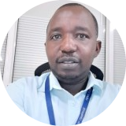

|  |
Fidele MunyankumburwaProfessional summaryI am an accomplished Research, Monitoring, Evaluation, Assessment, Collaboration, Learning and Adaptation expert with more than 15 years of experience managing complex Projects/Programs'activities in Rwanda. As M&E Data Use Specialist at Family Health International (FHI360), Monitoring, Evaluation and Learning Specialist at Chemonics International, Inc., Research and Assessment Specialist at Room to Read and Design, Monitoring and Evaluation for US Department of Agriculture/ McGovern-Dole International Food security and children nutrition program implemented by World Vision Rwanda, I have developed significant expertise in monitoring and evaluation tools, methods, and analysis, as well as accountability and learning processes. This experience with my academic background of Master of Science in Applied Statistics and MBA in project management, have made me a highly technical and effective professional and leader. Throughout my career I have worked closely with the USAID, USDA, Global Fund and UN funded interventions implemented by both international NGOs and Government of Rwanda. This has allowed me to be cultivated thorough knowledge of program management, policies, regulations, and procedures in this arena. |
| Dates | Position | Organization | Work and Achivements |
|---|---|---|---|
| 2021-present | M&E Data Use Specialist | Family Health International (FHI360) |
As M&E Data Use Specialist, I am a staff of Family Health International and supporting the USAID/Rwanda Schools and Systems project Monitoring and Evaluation data collection, entry, cleaning, modelling, visualization, and reporting. These are the main achievements on the current position.
|
| 2021-2021 | Monitoring, Evaluation and Learning (MEL) Specialist | Chemonics International |
As Monitoring, Evaluation and Learning (MEL) Specialist, I was a Chemonics International staff to coordinate the activities related to Monitoring, Evaluation and Learning at USAID/Rwanda Soma Umenye project. These are the main achievements on the position.
|
| 2017-2020 | Research and Assessment Specialist | Room to Read |
As Research and Assessment Specialist, I was a staff of Room to Read (a partner of Chemonics International to implement USAID Soma Umenye Project). I was coordinating the design and implementation of research and assessments for the project. These are the main achievements on the position.
|
| 2016-2017 | Design, Monitoring and evaluation Specialist | World Vision Rwanda |
As a Design, Monitoring and Evaluation Specialist for the project (US Department of Agriculture/ McGovern-Dole International Food security and child nutrition program support for Rwanda). These are the main achievements on the position.
|
| 2012-2016 | Statistician | Government of Rwanda/Workforce Development Authority |
As an expert in Statistics, I led the design and implementation of research and evaluation projects relevant to Workforce Development Authority in Rwanda. These are the main achievements on the position.
|
| Dates | Degree | University |
|---|---|---|
| 2014-2016 | Master of Science, Applied Statistics | Jomo Kenyatta University of Agriculture and Technology, Kenya |
| 2012-2014 | MBA, Project Management | Mount Kenya University, Kigali Campus |
| 2000-2005 | Bachelor of Science, Mathematics(Major),Education (Minor) | University of Rwanda/College of Education (Kigali Institute of Education at the tme) |
| Quantitative Research Approaches | ⭐⭐⭐⭐⭐ |
| Qualitative Research Approaches | ⭐⭐⭐⭐ |
| Python (Programming Language) | ⭐⭐⭐⭐ |
| Software development | ⭐⭐⭐ |
| Data Analytics | ⭐⭐⭐⭐ |
| Project and Program Management | ⭐⭐⭐⭐⭐ |
| Leadership | ⭐⭐⭐⭐ |
| Training and Capacity Building | ⭐⭐⭐⭐⭐ |
| Data Modeling | ⭐⭐⭐⭐⭐ | Monitoring and Evaluation approaches | ⭐⭐⭐⭐⭐ |
| ODK | ⭐⭐⭐⭐⭐ |
| Kobo toolbox | ⭐⭐⭐⭐⭐ |
| Survey CTO | ⭐⭐⭐⭐⭐ |
| ONA portal | ⭐⭐⭐⭐⭐ |
| Power BI | ⭐⭐⭐⭐ |
| SPSS | ⭐⭐⭐⭐⭐ |
| Stata | ⭐⭐⭐⭐ |
| R | ⭐⭐⭐ |
| Tableau | ⭐⭐ |
| SQL | ⭐⭐⭐ |
| Data story telling | ⭐⭐⭐⭐⭐ |
| Stakeholders engagement | ⭐⭐⭐⭐⭐ |
| Communication | ⭐⭐⭐⭐⭐ |
| Creativity | ⭐⭐⭐⭐⭐ |
| Negotiation | ⭐⭐⭐⭐⭐ |
| Name of Course | Provider | Certification Dates |
|---|---|---|
| Python Programing Course for Professional Software Developers and Data Scientists | Udemy Python Bootcamp | ongoing |
| Gateway to Grant | World Vision USA | 2016 |
| Design and Use of Simulation Models | International Institute for Educational Planning (IIEP-UNESCO) | 2015 |
| Equity-Focused and gender Responsive Evaluation | EvalPartners | 2015 |
| National Evaluation Capacity Development for Country-Led M&E Systems | EvalPartners | 2015 |
| Fundamentals of M&E | MEASURE Evaluation | 2014 |
| English | Proficient |
|---|---|
| French | Proficient |
| Kinyarwanda | Native |
| Swahili | Basic |